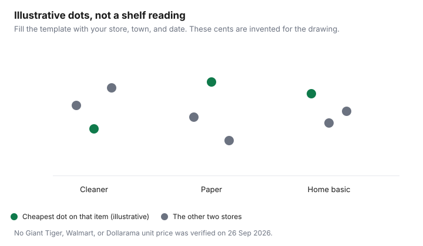

Household Items and Supplies · Canada
Giant Tiger for Household Basics: Where Canada's Discounter Beats Walmart (and Where It Doesn't)
Giant Tiger is the near store in a lot of towns, and Walmart is the store people assume is cheaper. Neither assumption survives a unit price. This draft opened gianttiger.com and Walmart Canada's 15 September 2025 Everyday Low Prices note on 26 September 2026. Neither page published a matched set of cleaner, paper, and home basics with a store, a town, and a date. Those rows are dropped. What remains is the model you can see, and a sheet you fill yourself.
A dated household basket that does exist, for Dollarama, Walmart, and Costco, is the three-banner guide. Store-brand swaps are the store-brand guide. How to pull paper and cleaner out of the grocery total is the supplies-bill audit. Grocery banner math, including Walmart as a food flyer, stays on the grocery banner guide.
Key takeaways
- No matched cleaning, paper, or home-basics prices were verified, so this guide prints a blank price-check instead of a winner.
- Giant Tiger's homepage, opened 26 Sep 2026, says low price is what they do, and it offers store pickup after you select a store.
- A price-match policy was not on the Giant Tiger pages opened that day.
- Walmart Canada's 15 Sep 2025 note describes Everyday Low Prices and Rollback offers. Its grocery saving figure is not a household unit price.
- A second store is worth the drive only when your own unit-price gap beats the trip.
Giant Tiger's model: everyday low prices, flyers, and limited selection
The homepage opened 26 September 2026 leads with "Low Price is What We Do." It also has a flyers collection and a store selector: "Find and pick up at your local Giant Tiger store," with a state for no store selected yet. That is a discount banner with a weekly flyer and a chosen store, not a promise that every SKU Walmart carries will be on the shelf. Limited selection is the constraint. If the count on the package or the brand on your list is missing, there is no comparison to win.
This draft did not open a store locator count, so it does not say how many stores sit in Ontario, Quebec, or the Prairies. Density claims need the locator or a dated source. The about page opened the same day did not add a store total. Use the store you can actually reach, and write its town on the sheet.
Household aisles where Giant Tiger often wins
"Often" is the wrong word until you have rows. Cleaner, paper towels, and basic home goods are the aisles people mean, because the packages are small enough to compare and the brands repeat. This guide will not name a winning aisle. A lower tag on a smaller bottle can be a higher price per litre. The supplies audit is the unit-price habit: package price divided by the count on the label, same units on both sides.
Flyers change the answer for a week. Giant Tiger's site exposes a flyers view. Clip only items already on your list, using the same rule as the household flyer guide. A flyer price you did not divide by the count is not a win.
Where Walmart or Costco still beat it on unit price
Walmart Canada's note dated 15 September 2025 says you do not have to wait for a sale, describes Everyday Low Prices as part of the mission, and says Rollback offers bring those prices lower through the year. The same note says a family of four can save more than $450 a year on groceries versus other national chains. That sentence is about the grocery shop. It is not a household-aisle unit price, and it is not used as one here. Costco's household math, including membership, is on the Dollarama comparison guide. If you are not a member, a Costco tag is not your price.
Large multi-buy sizes are where a big box often wins on paper, and where households lose if the count is not finished. A lower price per sheet that moulds in a closet is not cheaper. Write the count you will use before the next trip, not the count that makes the unit price look best. Store brands that passed a like-for-like check are the other guide. Do not assume Giant Tiger's label and Walmart's label are the same formula because the bottles are the same colour.
Online ordering and pickup options vs driving to a big box
The homepage path this draft could see is pickup at a selected Giant Tiger store. It did not describe a delivery fee, a minimum order, or a promise that every location ships. Before you drive, select the store and confirm the item is available for pickup there. A big-box trip has its own cost: the time, the fuel, and the extra items that appear because the store is larger. The grocery guide already treats Walmart as a place you price, not as an automatic second stop. The same discipline applies to paper and cleaner.
If pickup stock is wrong when you arrive, the trip failed. Note that on the sheet so you do not plan around a listing that does not match the shelf. This draft did not test a live pickup order, so it does not describe a substitution policy.
A two-store rotation for rural and small-town households
The rotation is the near store plus one farther store, not three logos every week. Giant Tiger can be the near store when it is the one in town. Walmart or Costco is the stock-up when your sheet shows a unit-price gap on items you will finish. Rural households feel the drive more, which is why the gap has to be written down. A feeling that Giant Tiger is "usually fine" is how a more expensive bottle becomes the habit.
Do the farther trip on a day you are already going, and take only the rows that earned it. If the gap on one bottle is smaller than the detour, buy it at the near store and stop collecting stores. No distance in this draft is a measured saving. Your odometer and your sheet are the measurement.
Price-check template for your nearest stores
One row per item. Same unit on every store: per 100 sheets, per litre, per load, or per item, never a mix. Leave a cell blank rather than remembering a price. The cheapest store is the lowest unit price on the day you wrote, in the town you wrote. Next month the row can flip. That is the point of the date column.
| Item and package size | Store and town | Date | Price (CAD) | Unit price | Cheapest that day? |
|---|---|---|---|---|---|
| Cleaner, size on the label | |||||
| Paper, sheet count on the label | |||||
| One home basic you actually replace |

A price-match policy was not on the Giant Tiger homepage or about page opened 26 September 2026. Do not plan the rotation around handing a Walmart flyer to a Giant Tiger till. Compare the unit prices and buy at the cheaper shelf.
Sources & date stamps
- gianttiger.com homepage, opened 26 Sep 2026: "Low Price is What We Do"; flyers; "Find and pick up at your local Giant Tiger store." No price-match policy and no store-count by province on the pages opened. About page opened the same day did not add a store total.
- Walmart Canada, "This is not a sale! Everyday Low Prices," 15 Sep 2025, read 26 Sep 2026: Everyday Low Prices and Rollback offers. The family-of-four figure on that page is a grocery comparison and is not used as a household unit price.
- No matched shelf prices were verified. The comparison table is blank on purpose.
Frequently asked questions
Is Giant Tiger cheaper than Walmart for household items?
Sometimes, on a specific item, on a specific day. This draft did not publish a unit-price row, because gianttiger.com and the Walmart pages opened 26 Sep 2026 did not show a matched set of cleaning, paper, and home basics with a store and a date. Walmart Canada's 15 Sep 2025 note describes Everyday Low Prices and Rollback offers, and it is not a household unit-price table. Use the blank price-check and keep a row only when you wrote the price yourself.
What does Giant Tiger usually win on?
This guide does not name a winning aisle. The homepage opened 26 Sep 2026 uses the line Low Price is What We Do, and it shows flyers and a store selector for pickup. If the count or the brand is not on the shelf, there is no comparison. The Dollarama, Walmart, and Costco guide is where a dated household basket already exists, so do not copy those prices into a Giant Tiger row.
Does Giant Tiger price match?
A price-match policy was not on the Giant Tiger homepage or the about page opened 26 Sep 2026. Do not bring a Walmart flyer to the till and expect a match this guide can cite. Compare the unit price and buy at the cheaper shelf.
Can I order Giant Tiger online for pickup?
The homepage opened 26 Sep 2026 says to find and pick up at your local Giant Tiger store and lets you select a store. That is the pickup path this draft could see. It does not describe a delivery fee, a minimum, or a promise that every store ships. Check the store you selected before you drive.
Is a two-store rotation worth the drive?
Only when the unit-price gap on items you will use is larger than the trip. Write both prices, the package size, and the date. If the second store is a detour for one bottle, the rotation failed. Rural households can keep Giant Tiger as the near store and a Walmart or Costco trip as the stock-up, and no distance in this draft is a measured saving.